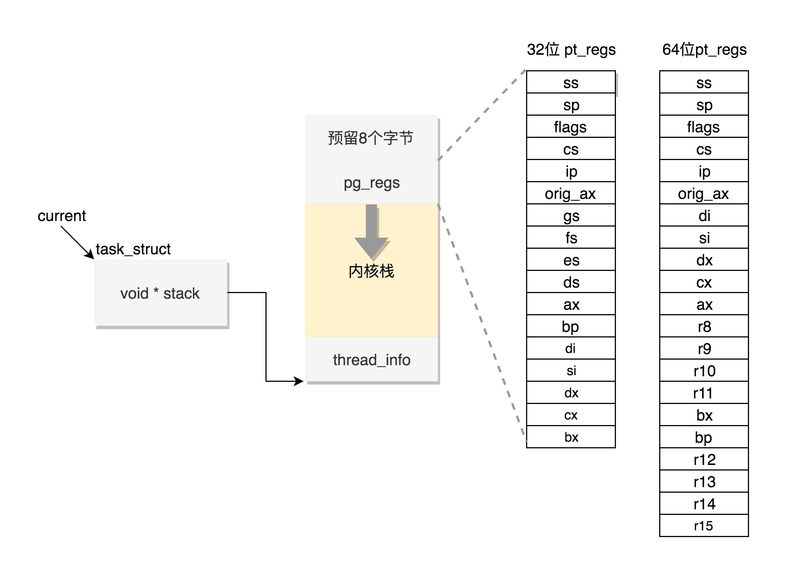

进程数据结构
task_struct
- 任务ID
- 任务展示
三种睡眠状态
- TASK_INTERRUPTIBLE，可中断的睡眠状态
- TASK_UNINTERRUPTIBLE，不可中断的睡眠状态
- TASK_KILLABLE，可以终止的新睡眠状态 可以响应致命信号
进程调度
- 任务状态
- 信号处理
- 任务ID
- 调度相关
运行统计信息
进程亲缘关系
- parent 指向其父进程。当它终止时，必须向它的父进程发送信号。
- children 表示链表的头部。链表中的所有元素都是它的子进程。
- sibling 用于把当前进程插入到兄弟链表中。

用户和用户组的信息
- uid gid
- euid egid
- fsuid fsgid
capabilites
- cap_permitted 表示进程能够使用的权限
- cap_bset，也就是 capability bounding set，是系统中所有进程允许保留的权限。如果这个集合中不存在某个权限，那么系统中的所有进程都没有这个权限。即使以超级用户权限执行的进程，也是一样的
- cap_ambient 是比较新加入内核,执行 exec 的时候，cap_ambient 会被添加到 cap_permitted 中，同时设置到 cap_effective 中
进程
- 任务ID
- 亲缘关系
- 任务状态
- 权限
- 运行统计
- 调度相关
- 信号处理
- 内存管理
- 文件和文件系统
- 内核栈

用户栈和内核栈的具体实现
- 用户栈详解：http://blog.csdn.net/tiankong_/article/details/75676131
- 内核栈详解：http://blog.csdn.net/tiankong_/article/details/75647488
用户态函数栈
- 栈是一个从高地址到低地址，往下增长的结构，也就是上面是栈底，下面是栈顶，入栈和出栈的操作都是从下面的栈顶开始的。

用户态和内核态执行
- struct thread_info thread_info;
- void *stack;
内核栈

task_struct找内核
- task_struct找内核栈是通过stack指针，直接找到内核线程栈，stack指针记录的是内核栈的首地址。
- task_struck找内核寄存器是通过 内核栈的首地址（1中的stack指针） + (THREAD_SIZE - TOP_OF_KERNEL_STACK_PADDING)定位到pt_regs的最高位地址，再减一得到pt_regs的最低位地址（首地址）
内核找task_struct
- 通过内核栈找到 task_struct
32位 直接由 thread_info 中的指针得到
64位 每个 CPU 当前运行进程的 task_struct 的指针存放到 Per CPU 变量 current_task 中
####